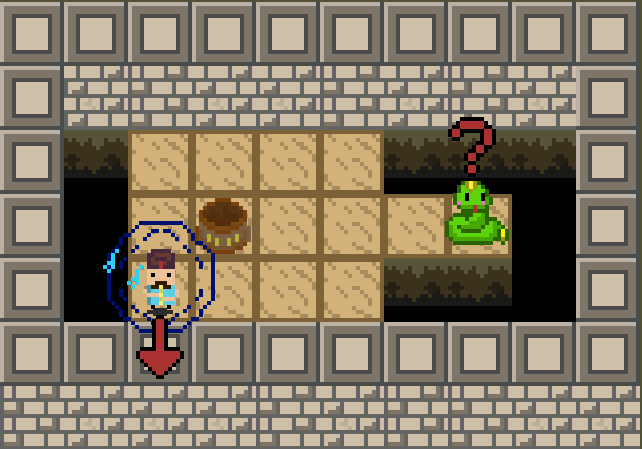
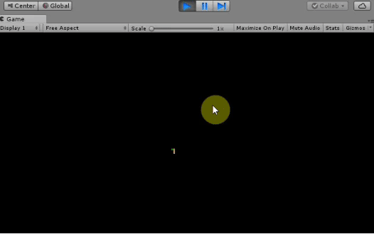

I'm a software engineer in the process of transitioning to game development, with a specific focus on Unity engine at the moment. With 5 years of experience in Unity, I'm dedicated to mastering the intricacies of game development and honing my skills in Unity. I approach game creation as a constant learning process, always seeking to improve and deliver engaging experiences.
Professional Experience
Unity 3d Developer
Freelance (Self employed) May 2018 - Present (5 years 2 months)
Software Engineer
Grupo Senff Jun 2017 - Sep 2019 (2 years 4 months)
Software Engineer
Parana Clinicas Nov 2014 - May 2017 (2 years 7 months)
First Person Shooter Game created by myself and two other persons. I took charge of all the programming aspects of the game, as well as the integration with the Steam SDK.
Personal project I was working on alone, a game that combines turn-based strategy with puzzles
Dwarf and Mariachi
An idle game that I worked on for a company some time ago. I was responsible for all the programming tasks, including the integration with major SDKs such as Google Play, AdMob, IAP, Firebase, and Facebook.
Idle Slayer Clone
Project I did for a client on Upwork website that was basically a clone of the game Idle Slayer. It has all the same features like the idle system, quest system, craft system, skill tree, upgrades, save system, and more. The client decided to put the project on hold, so the graphics are incomplete.
Procedural Ui Talent Treee - Asset WIP
An asset I was creating to publish on Unity Asset Store to create procedural talent trees interfaces.
Litle puzzle game project made by me (programming) and two more people (art and sound) in two days for 2019 GMTK GameJam. We managed to rank 63 out of 2567 games.

Procedural 2D Map Generator
A little study I did on procedural tile map generation a long time ago.

Merchant Idle Game - WIP
A project I'm working on for a client an idle island exploration game, but it's still in the early stages of development.